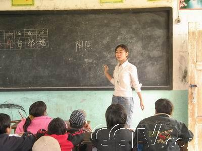
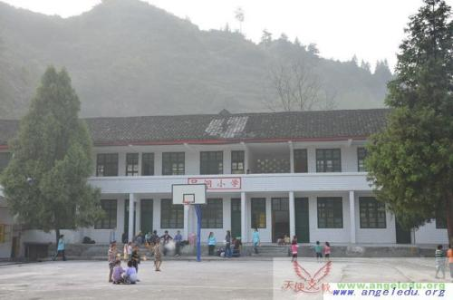

直接物质帮助好吗?--山村小学孩子的变化
|
山村小学孩子的变化
在位于湖南湘西的偏远的大山里，有很多不被外界了解的山村小学。梦创公益从2007年春季学期开始，一直持续在当地实施“天使支教”-乡村支教活动。每学期都会招募组织长期接力支教志愿者，为这些学校的学生提供常规教学和课后地陪伴服务。

"志愿者在给学生上课"
随着乡村支教志愿者到来和时间的推移及媒体的宣传，外界对这些偏远学校逐渐有所了解。也不断有各种社会人士为学校提供各种支持，修建学校，配套教学设施，资助学生。随着这些资助的大量涌入，也逐渐打破了这些当初不被外界关注的山村小学的宁静。
" "

"吕洞小学校园"
这其中有所学校，从2012年秋季学期开始，每个学期会接待7批以上的社会爱心捐赠活动。每次活动，爱心人士都会给学生带来大量的文具、书包、新衣服、新鞋子以及食品等。而对于个别贫困家庭的孩子还会进行现金捐赠。
很多来西藏旅行旅行的人都会给孩子们带上糖果、铅笔、本子这些礼物。这些初衷固然是好的，但是随着游客的逐年增加，“礼物”却慢慢变了性质。 为学校配套硬件建设，这是很好的事情。但是随着其他与学生个人相关的资助进入，支教志愿者就很快发现一个普遍现象，就是学生对学习越来越没了兴趣，反而更期待外界给他们带来的各种物质资助了。甚至有个别学生已经懂得如何讨好资助人，以获得更多的资助。 而对于这些社会捐赠来的各种物品，学生们也不会有任何爱惜的感觉，甚至觉得是理所当然。 在个别学校，还有当地学生在上课时直接去翻初次到校志愿者的包。当志愿者问他们在干什么时，回答居然是：“找钱啊，你们来了不就是给我们钱的吗？” 有次进山顺带问当地司机:如果以后支教志愿者全部拒绝外界对学生的资助，作为家长你会有什么看法？他回答:会有个别家长不理解，但我绝对支持你们这样做，这可以避免小孩产生依赖思想。 现在当地学区领导也发现了这种大量捐赠给学生带来的负面效应，但是根据他们苗家人的习惯，只要是外界来帮助他们的都不能拒绝别人的好意。所以只能继续无奈的接受好心人对学生的爱心摧残。 通过以上事实我们还会认为农村孩子最需要的还会是物质和金钱吗 感悟：中国有句老话“慈母多败儿”，其实这用到公益领域又何尝不是这样呢？
|